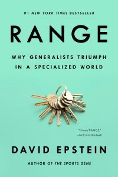

Library › Psychology & People
Range — Summary & Key Lessons

Why generalists triumph in a specialized world — the case for sampling widely, quitting strategically, and thinking laterally.
📖 OPEN THE FULL INTERACTIVE BREAKDOWN →🌐 Read it in Hindi, Hinglish, Gujarati, Tamil & 22 more languages — free, with audio.
💡 The Big Idea
The 10,000-hours cult sold one story: pick early, specialize hard. Epstein's data says that story only works in KIND learning environments — golf, chess, firefighting — where patterns repeat, feedback is instant, and next year looks like last year. Most of modern life is WICKED: rules change, feedback lies or arrives late, and experience alone can teach exactly the wrong lessons. In wicked worlds, breadth wins: elite athletes usually had a SAMPLING PERIOD across sports (Federer) rather than baby specialization (Tiger); Nobel laureates are dramatically more likely than average scientists to have serious artistic hobbies; the most impactful inventors have deep skills in one area PLUS wide knowledge across many (the 'T-shape'). The mechanisms: ANALOGICAL THINKING (solving problems by importing structures from distant domains — Kepler cracked planetary motion with analogies to light and magnets), MATCH QUALITY (fit between who you are and what you do predicts success more than head starts — and you only learn fit by trying things; quitting is often optimal search, not weakness — 'winners quit fast and often'), and OUTSIDE VIEWS (deep insiders miss what informed outsiders see instantly). Don't feel behind: your zigzag was data collection.
🧠 The 6 Key Lessons
Lesson 1: Kind vs Wicked: Know Which Game You're Playing
Chapters 1-2: The Cult of the Head Start
Psychologist Robin Hogarth's split decides everything about how to learn. KIND environments: stable rules, repeating patterns, quick accurate feedback — chess, golf, classical music, radiology-with-answer-keys. Here, early specialization and brute repetition genuinely compound; the 10,000-hours research was BUILT here (and quietly stayed here). WICKED environments: rules shift, patterns half-repeat, feedback is delayed, missing, or actively deceptive — entrepreneurship, medicine's messy edges, careers, markets, parenting, geopolitics. Here experience can be a LIAR: the famous NYC ER doctor who developed a confident 'sixth sense' for typhoid by palpating tongues — and turned out to be INFECTING patients with his hands; thousands of reps, perfect confidence, wrong lesson. Wicked worlds punish narrow pattern-matching (yesterday's pattern is today's trap) and reward conceptual models, breadth, and the humility to test rather than recognize. The strategic question before any grind: is my field kind enough that reps alone will teach true lessons — or wicked enough that I need range, experiments, and outside views? Most people never ask, and 10,000-hour themselves into expensive superstition.
📖 Example: Tiger vs Roger, the book's frame: Tiger Woods — putting at 2, national TV at 5, the poster child of early specialization — is real, but golf is among the kindest environments on earth. Roger Federer — sampled squash, wrestling, skiing, basketball, football;… Read the full example →
⚡ Do this: Classify your main game in writing: How stable are its rules? How fast and honest is feedback? If it scores wicked (most careers do), deliberately add one cross-domain input this month — a course, book, or project from an unrelated field — as strategy, not hobby.
Lesson 2: Analogies From Far Away: The Outsider's Superpower
Chapters 5-6: Thinking Outside Experience
Deep problems rarely yield to more depth — they yield to STRUCTURE imported from elsewhere. Kepler, stuck on why planets move, reasoned through analogies to light, magnets, boat currents — inventing astrophysics with metaphors because no astronomy precedent existed. The lab-study version (Kevin Dunbar): the most productive molecular biology labs solved stuck problems in meetings via analogies to OTHER domains, and the more distant the analogy, the more novel the solution. The failure mode is the INSIDE VIEW: judging your problem by its surface details and your field's precedents ('our situation is unique' — it never is); the fix is Kahneman's OUTSIDE VIEW: force yourself to generate structurally similar problems from other domains and ask what happened there — venture bets, product launches, career moves all have base rates hiding in foreign clothing. Practical habit: when stuck, don't ask 'what do experts in my field do?' — ask 'what is this problem LIKE?' and list five answers from five domains before choosing a strategy. Range isn't trivia collection; it's owning more structures to map onto new problems.
📖 Example: The Ambidextrous horns of InnoCentive: corporations post their most stubborn R&D problems publicly (after their own specialists failed) — and solvers are disproportionately OUTSIDERS: the Exxon Valdez cleanup problem (separating oil from frigid water) that… Read the full example →
⚡ Do this: Take your current hardest problem and write 'This is structurally like ___' five times, each from a different domain (nature, sports, history, other industries, games). Pick the most provocative mapping and steal its solution shape for a one-week experiment.
Lesson 3: Match Quality: Quitting Is Search, Not Failure
Chapters 7-8: Flirting With Your Possible Selves
Economists' term MATCH QUALITY — the fit between what you do and who you are — predicts performance and persistence better than head starts do. The catch: you cannot deduce your match from introspection ('we learn who we are in practice, not in theory' — Ibarra); you learn it by RUNNING TRIALS: projects, jobs, side experiments — then keeping what fits. This reframes quitting: Seth Godin's line Epstein endorses — 'winners quit fast and often' — because leaving a bad match early is optimal search behavior, while 'grit' aimed at a mismatched target is just well-branded sunk-cost fallacy (the research nuance: gritty persistence predicts success mainly AFTER match quality is established, not before). The data on late starters: higher-education switchers and career changers initially 'fall behind,' then systematically catch up and often surpass — because they traded a small skills head-start for a large fit advantage, and fit compounds daily forever. The planning corollary: stop writing 10-year plans from theory; run the SHORT experiment, harvest the self-knowledge, adjust. You are a moving target — your 20-year-old self was a stranger making promises on your behalf.
📖 Example: Van Gogh, the book's patron saint of zigzag: failed art dealer, failed teacher, failed preacher, failed missionary — a resume of quitting that Victorian LinkedIn would have mocked — who found painting at 27 and, precisely BECAUSE nothing else had claimed… Read the full example →
⚡ Do this: Design one 30-day match-quality trial for a path you're curious about (freelance project, course + deliverable, shadowing) with a defined end-date and review question: 'energy up or down?' And identify one current commitment you'd never re-choose today — schedule its exit conversation.
Lesson 4: Deliberate Amateurs: Keep a Foot Outside Your Field
Chapters 10-12: Expanding Your Range
The experts who age best keep AMATEUR ZONES — domains where they're free to play, be wrong, and import weirdness. Nobel laureates are ~22x more likely than average scientists to perform as amateurs outside science (music, art, theater); their hobby brains cross-pollinate their work brains. The organizational version: teams need both hedgehogs (deep drillers) and foxes (integrators) — and Philip Tetlock's forecasting tournaments crowned the foxes: integrators of many weak clues beat one-big-idea specialists so badly it embarrassed the profession (the best forecasters' trait: they treated beliefs as hypotheses to update, not identities to defend). The failure mode of pure depth at scale: NASA's Challenger — engineers whose quantitative culture couldn't process the qualitative photo evidence of O-ring damage ('the data was not conclusive' — so they launched); deep process, missing range, seven dead. Epstein's parting posture: compare yourself to yourself yesterday, not to the wunderkind who specialized at 12 — in wicked worlds, your detours are your dataset, and breadth is a late-blooming asset class.
📖 Example: Gunpei Yokoi, Nintendo's tinkerer: a self-described mediocre electronics engineer ('I didn't have cutting-edge skills') who deliberately combined OLD, well-understood technologies in playful ways — 'lateral thinking with withered technology' — producing the… Read the full example →
⚡ Do this: Institutionalize your amateur hour: block 2 hours weekly for a skill/domain with zero career justification. Once a month, force one idea from that domain into your main work ('what would a photographer/gardener/DM do with this problem?') — and keep a running list of the crossovers.
Lesson 5: The Cult of the Head Start: Why Late Bloomers Win Long Games
Part 1: The Specialization Trap
Epstein's opening attack on the 'start early, specialize early' narrative: the research on elite performers is full of late bloomers and switchers who beat the head-starters — because most of life's games are 'kind' only in narrow fields, and 'wicked' in everything real. In wicked domains (business, art, medicine, life), early specialization builds a brittle expertise that breaks when conditions change, while a broad sampling builds flexible knowledge that adapts. The head start looks like an advantage in the short race and becomes a liability in the long one. The practical permission: if you haven't found your 'one thing' yet, that's not failure — it's still data collection for a wiser match later.
📖 Example: Epstein profiles Van Gogh, who failed at multiple careers before picking up painting at 27 and becoming a master — his late start didn't limit him because art rewards a broad emotional and experiential palette, not early drilling. The head-start kids were… Read the full example →
⚡ Do this: If you feel 'behind' because you've switched paths or started late, write down 3 skills or perspectives your detours gave you that a straight-line specialist would lack.
Lesson 6: The Interleaving Effect: Mixing It Up Beats Blocking It Down
Part 4: The Learning
Epstein's research summary on how we actually learn: blocked practice (drilling one skill until perfect) feels productive but builds shallow recall, while interleaving — mixing related but different problems — feels harder and produces deeper, more transferable mastery. The same principle explains why generalists excel: they've been interleaving their whole careers, connecting patterns across fields that specialists never see. The uncomfortable implication: the study session that feels messy and difficult is the one teaching your brain the most. Embrace the struggle of switching contexts; it's not inefficiency, it's how transferable expertise is built.
📖 Example: Epstein cites the famous learning studies where students who practiced math problems in mixed order performed worse during practice but dramatically better on final tests than students who drilled one type at a time. The felt difficulty was the actual… Read the full example →
⚡ Do this: Change your next study or practice session: instead of one skill for an hour, rotate 3 related skills in 20-minute blocks. Expect it to feel harder — that's the point.
✅ 5-Step Action Plan
- Diagnose kind vs wicked before grinding: reps only compound where feedback tells the truth.
- When stuck, generate five distant analogies before consulting more insiders.
- Run 30-day match-quality trials; quit mismatches fast — it's search, not surrender.
- Keep beliefs as hypotheses: update like a fox, not defend like a hedgehog.
- Protect a weekly amateur zone and forcibly cross-pollinate it with your main craft.
💬 Best Quotes from Range
- “The most effective learning looks inefficient; it looks like falling behind.”
- “We learn who we are in practice, not in theory.”
- “Compare yourself to yourself yesterday, not to younger people who aren't you.”
Interactive version: mark lessons as read, listen in your language, share quote cards.